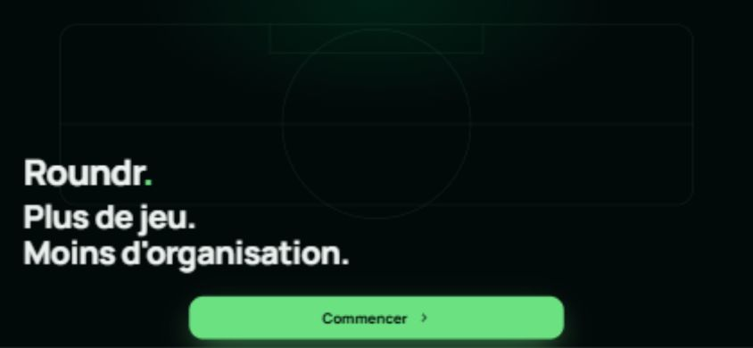
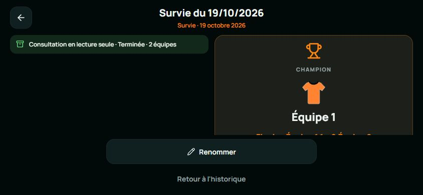
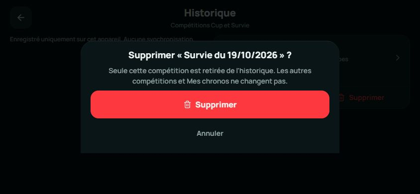
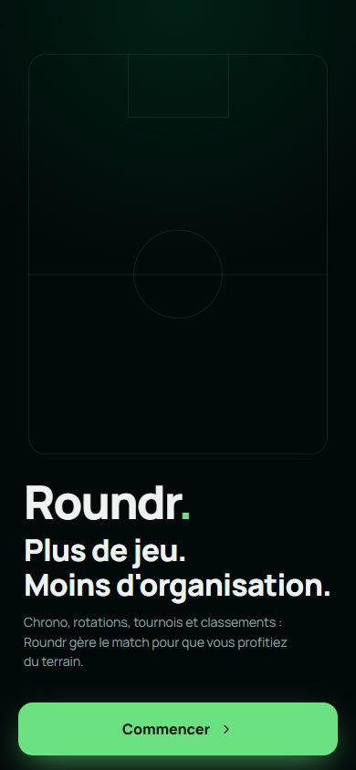
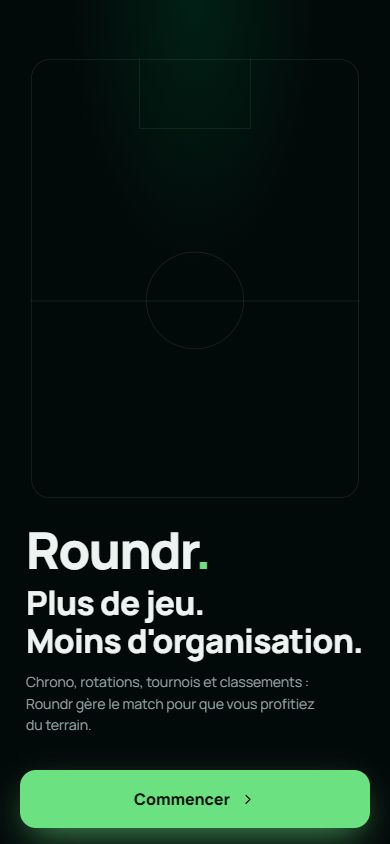
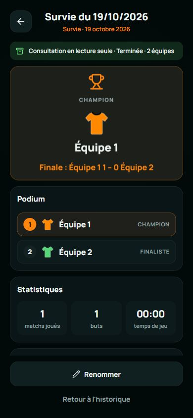
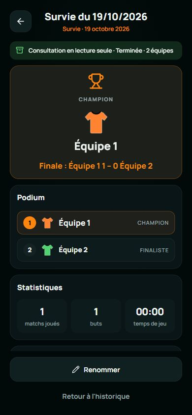
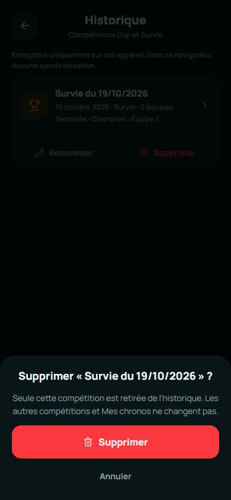
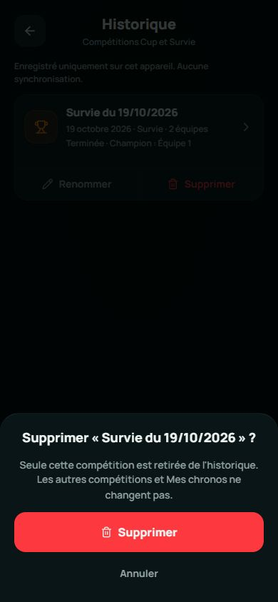

Roundr · Retouches finales de la Phase 1
19 octobre 2026 · Seulement les trois écrans corrigés. Captures réelles Lovable / Expo Web, sans retouche des images.
Rapport, mesures et contrôles · Mesures brutes · Aperçu des trois corrections paysage
Référence Lovable : 1c59720dc5b180d5b1bacfaf935902b4053895fa. Expo avant retouches : c47716ebba4657aeef343ff2d631e67d238341df. Les noms, équipes, score 1–0 et temps 00:00 sont alignés ; les couleurs d’équipes enregistrées sont conservées.
Introduction · 844 × 390
Lovable · référence figée

Expo · après retouche

Rond central : 84,92 × 84,92 px dans les deux applications. Logo, slogan et CTA Expo restent à leurs coordonnées précédentes.
Voir Expo avant la retouche

Historique — détail · 844 × 390
Lovable · référence figée

Expo · après retouche

Renommer : 168,78 × 50 px, à x = 337,60 / y = 282 dans les deux applications. Interligne des actions : 4 px.
Voir Expo avant la retouche

Confirmation de suppression · 844 × 390
Lovable · référence figée

Expo · après retouche

Fenêtre : 520 × 225,67 px, à x = 162 / y = 164,33 dans les deux applications. Ancrage en bas ; boutons de 56 et 44 px.
Voir Expo avant la retouche

Portrait · vérification de non-régression
Le portrait précédemment validé est conservé ; les retouches de présentation s’appliquent au paysage. Le relevé géométrique confirme les coordonnées inchangées du rond, du logo, du slogan, du CTA et des actions du détail.
Introduction · 390 × 844
Lovable · référence figée

Expo · après retouche

Contrôle portrait : présentation conservée. Comparer aussi les mesures avant/après dans mesures.json.
Historique — détail · 390 × 844
Lovable · référence figée

Expo · après retouche

Contrôle portrait : présentation conservée. Comparer aussi les mesures avant/après dans mesures.json.
Confirmation de suppression · 390 × 844
Lovable · référence figée

Expo · après retouche

Contrôle portrait : présentation conservée. Comparer aussi les mesures avant/après dans mesures.json.
Limite : ceci vérifie le rendu navigateur, pas les appareils physiques. Les zones sûres non nulles, la rotation native et l’agrandissement système restent à confirmer sur iPhone/Android.